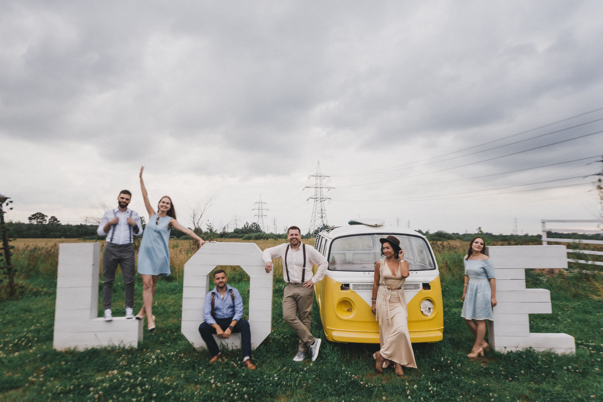
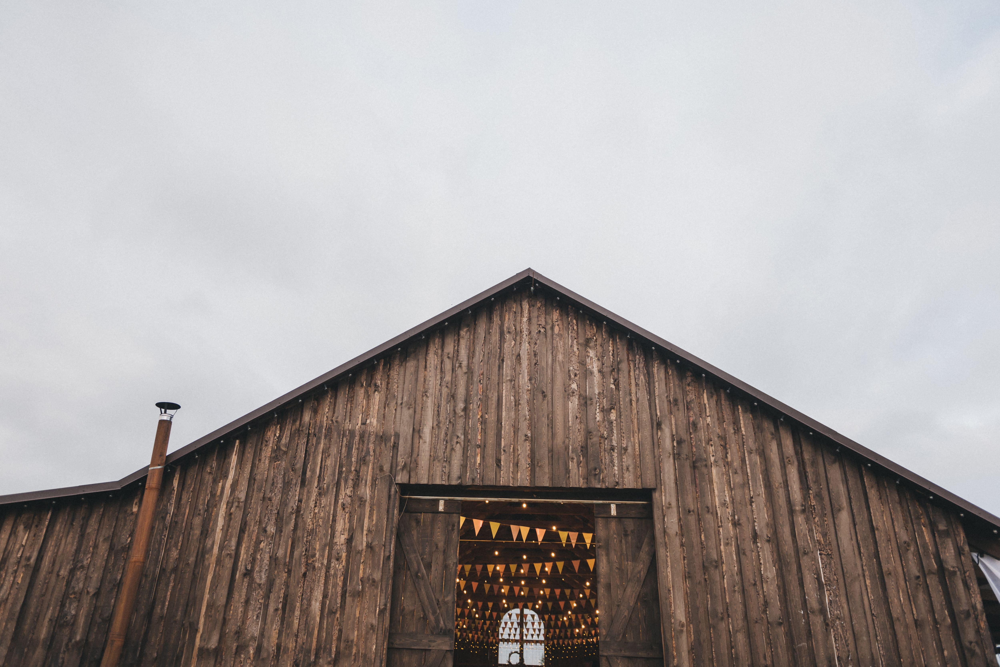
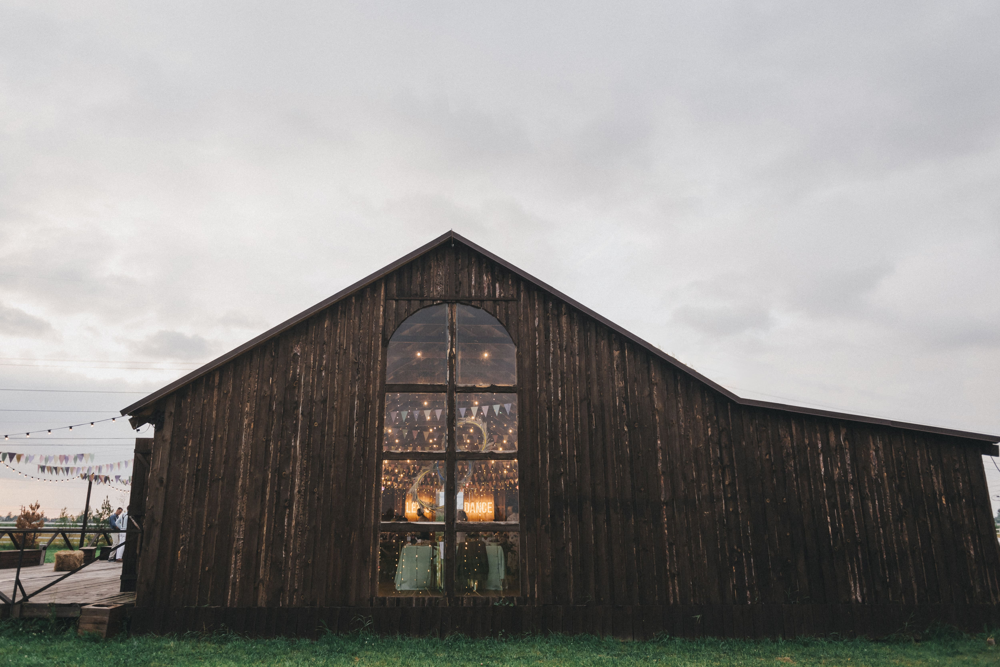
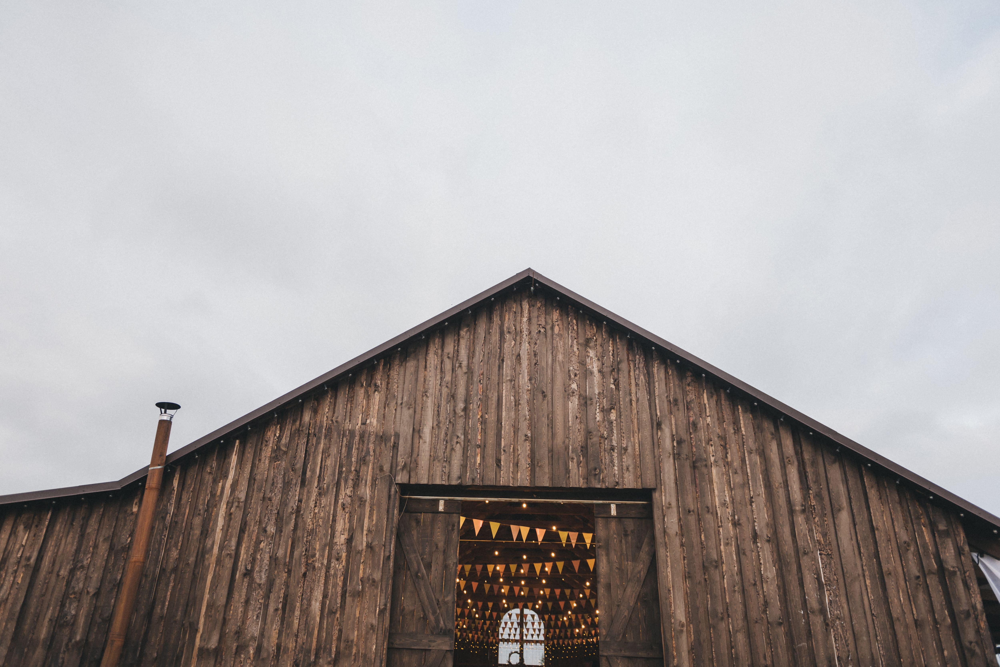
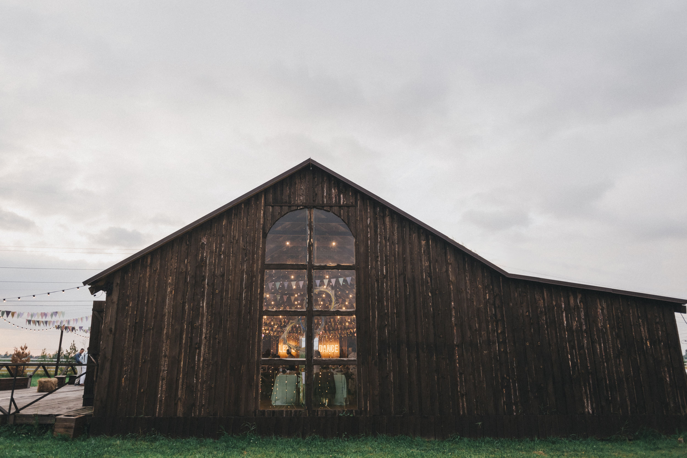
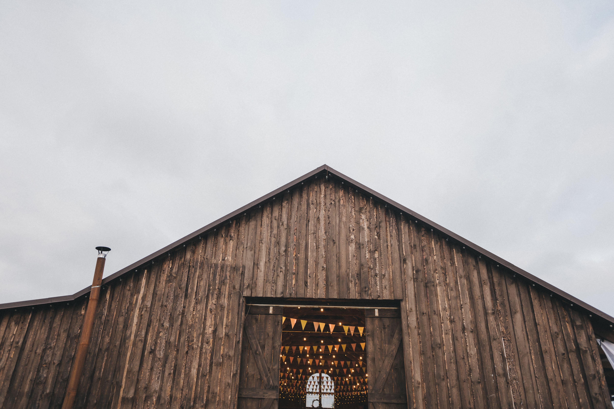
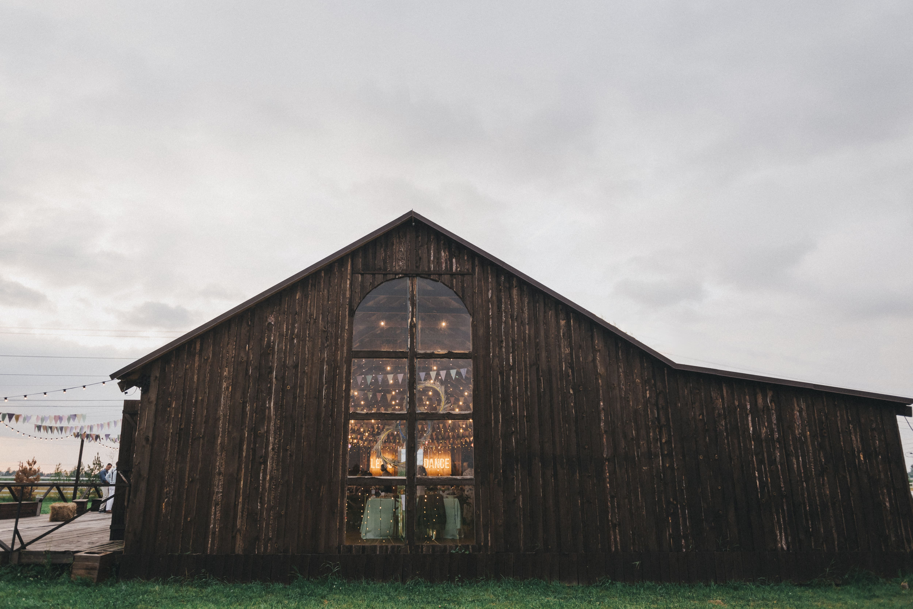

+7 (921)444-00-44
+7 (921)426-78-48
THE FARM
Площадка для мероприятий любого масштаба: от камерных мероприятий до крупных корпоративов и масштабных фестивалей.
о площадке амбар the farm
Банкетный зал «Farm» — это уникальная площадка, расположившаяся недалеко от СПб, где для вас подготовят как праздничный банкет, так и предсвадебный фуршет.
Как интерьер, так и экстерьер ресторана выполнен таким образом, чтобы создавать впечатление настоящего сельского амбара (это и элементы, выполненные из натурального дерева, и соответствующее освещение, и множество эксклюзивных мелочей). Все это создает неповторимое ощущение умиротворения, чего так не хватает жителям шумных и пыльных мегаполисов. А огромная территория комплекса позволяет вместить за один раз до тысячи гостей!
 От 50 до 800 человек
От 50 до 800 человек- Стрельна, Красносельское шоссе, 99
корпоративы
В 20 мин езды от центра города (в 12 км от Петербурга) располагается деревянный Амбар,вместимостью до 500 персон и открытая видовая терраса,площадью 240 кВ м. В вашем доступе 12 Га зелёной ухоженной территории для реализации любых мероприятий и идей. Зоны активного отдыха, множество уличных беседок и возможность установки шатров. Так же на территории расположены 6 санузлов и парковка на 20 машиномест
свадьбы
Деревянный Амбар, площадью 270 квадратных метров с видовой открытой трассой, площадью 240 квадратных метров - идеальное место для проведения вашей свадьбы! Удобное месторасположение - всего в 12 километрах от Петербурга, неподалеку от знаменитых фонтанов и парков Петергофа. Многообразие банкетной мебели и вариантов рассадки (круглые столы, деревянные амбарные столы, Венские стулья и многое другое) Высокие потолки (в коньке достигающие высоты 6 метров) дают возможность организации декораций любого масштаба. Панорамные окна расположены по всему залу, который оснащен современной системой кондиционирования. Профессиональное музыкальное и световое оборудование. Большой выбор банкетного меню. А территория в 12 га подразумевает большое количество зон для выездных регистраций.


 







оставить заявку
Оставьте Ваши контактные данные, и мы свяжемся с Вами в самое ближайшее время